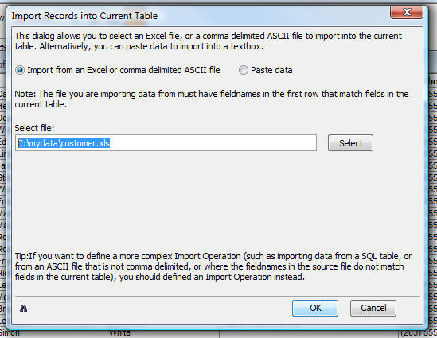
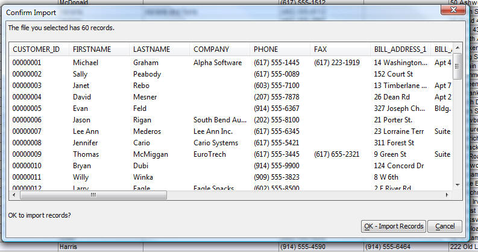

Quick Import for a Form or Browse
A new option the the Records menu for a Form or Browse allows you to import data from an Excel file or a comma delimited ascii file directly into the current table (i.e. the table that the open Browse or Form is based on).The file you are importing must have field names in the first row that match field names in the current record.
Watch Video

The Quick Import dialog allows you to import data from an Excel file or a comma delimited ascii file into to the current table.
When you click OK, Alpha Five first gives you a preview of the data in the file you are importing before the data is actually imported into the current table.

Before the records are added to the current table, the confirmation dialog shows you what will be imported.